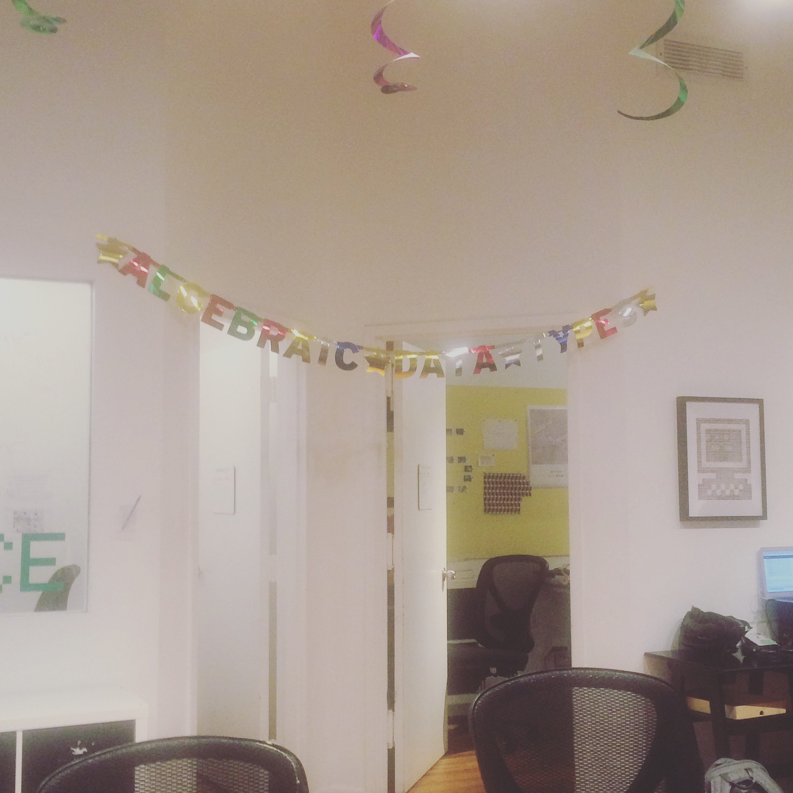

My first week at Recurse Center

My first week at Recurse Center’s (RC) just ended and so far it has been very cool. If you don’t know what RC is the short description is “a retreat for programmers”. If that’s not enough you can go to their site.
I’m starting my RC batch with two objectives: to learn about operating systems (a college subject I missed) and to learn about distributed systems. For my first objective I was thinking on following this lectures and for the second one I was thinking I could try to implement the Raft consensus algorithm. I don’t know if I will keep up with these objectives on the weeks to come. Everybody is doing cool things and it’s easy to get distracted.
Right now Spencer Russell is taking some time as a resident at RC. I told him I wanted to learn some concurrency in C, which is an area he has some experience on. First thing I did was implement a very simple thread-safe queue. After that I decided to expand the project to implement a small actors library on top of that. I paired with Spencer to do this and this is what I have at the moment. So far I’ve learnt a lot from Spencer: some things are very C-related and others things about concurrency, design and memory management. I realized it would be better to learn some of the C things by reading some book and this one looks good (Note: just over the weekend, before I published this post, the book stopped being available online for free).
Right now I’m having a bug with an example I wrote for the small actors library and I’m trying to find the cause. First I used the good old printf but it looks like using gdb is a better idea (some of these simple things go over my head). Thanks to a fellow recurser I’ve learnt to do some basic things with it and I think it’s a good starting point to find the bug’s cause.
Besides my silly C adventures I’m trying to learn Rust. So far the hardest thing I’ve found is the ownership system which is a feature of Rust’s type system. I think it’s intended to prevent wrong memory accesses (goodbye segfaults?) and maybe also make it safer for concurrency (avoid sharing the same memory location amongst diferent threads?).
Also I finished reading very quickly the Raft article and I have a very general view of the algorithm. Next week I would like to try reading it again while drafting a possible implementation.